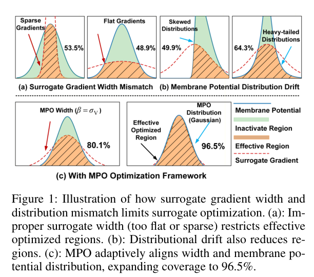
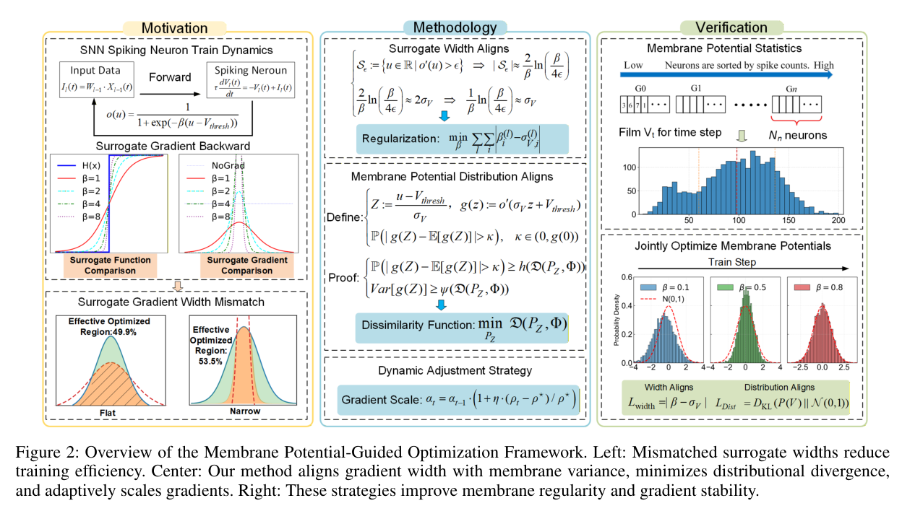

Paper Story · AAAI 2026 · CCF-A
Membrane-potential-guided surrogate optimization
Optimization Method for Surrogate Function in Spiking Neural Networks Based on Membrane Potential Distribution
Proceedings of the AAAI Conference on Artificial Intelligence, 40(30), 25718-25726 (2026)
Research question
Direct SNN training is affected by non-differentiable spikes, membrane potential drift, and temporal discretization errors. Fixed surrogate functions can easily mismatch neural activity distributions.
Core method
MPO regularizes membrane potential distributions with KL divergence, aligns surrogate width with membrane statistics, and introduces a discretization-error metric with correction to improve temporal gradient propagation.
Method steps
- Membrane statistics
Track membrane potential distributions and drift during training.
- Distribution loss
Use KL divergence to stabilize membrane dynamics.
- Adaptive width
Match surrogate-gradient width with membrane variance.
- Error correction
Measure and correct spike discretization errors.
Main finding
The effective width of surrogate gradients should match membrane potential statistics dynamically instead of being fixed globally.
Why it matters
It reframes surrogate-function design from empirical hyperparameter tuning to a dynamics-aware optimization problem.
Figures


Surrogate Gradient Width Mismatch
None · The schematic compares effective optimization regions for surrogate functions and gradients.
The paper starts from the observation that fixed surrogate widths can misalign with membrane-potential distributions.
Source: Proceedings of the AAAI Conference on Artificial Intelligence, 40(30), 25718-25726 (2026).
Figure reuse rights pending


MPO Framework Overview
None · The overview organizes motivation, methodology and verification around width alignment, distribution alignment and dynamic scaling.
This figure is the fastest way to understand how MPO uses membrane statistics to tune SNN training.
Source: Proceedings of the AAAI Conference on Artificial Intelligence, 40(30), 25718-25726 (2026).
Figure reuse rights pending
Scope and conditions
A useful reading line is: membrane distributions determine gradient effectiveness; therefore surrogate functions should adapt to those distributions.